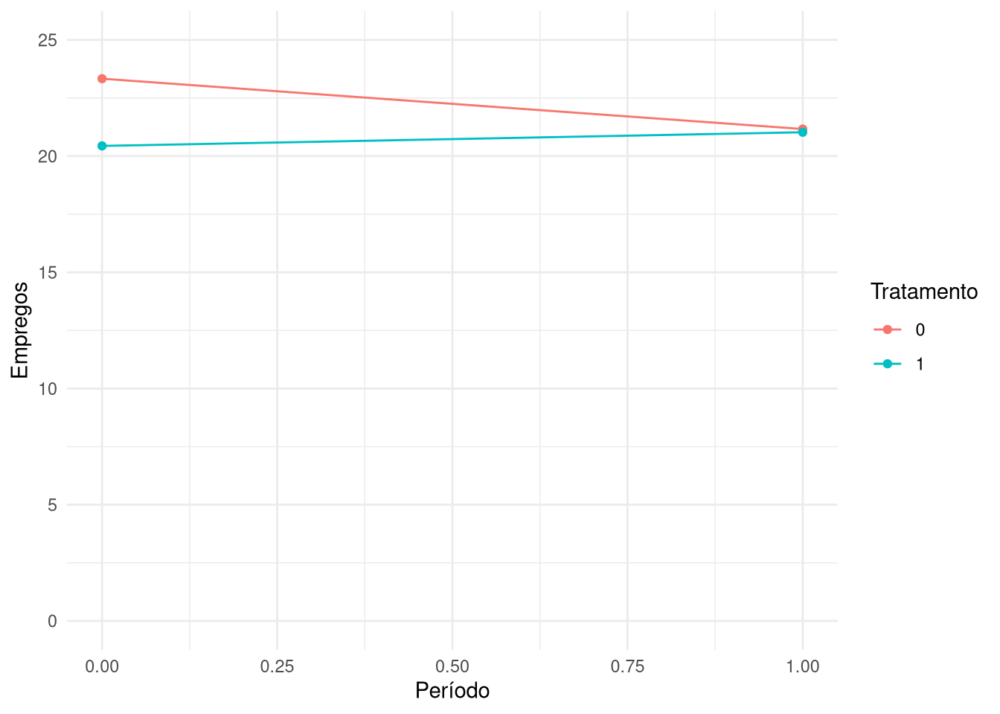
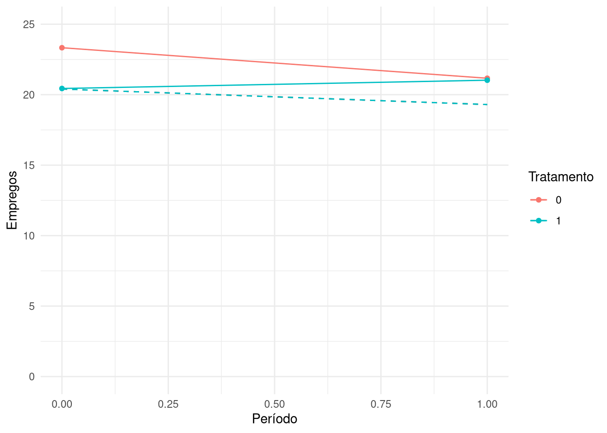

library(modelsummary) # Para exportar tabelas de regressão
library(tidyverse) # Para várias tarefas
library(fixest) # Para estimar modelos de regressãoDiferença-em-diferenças
Introdução
Estas notas introduzem a implementação em R da última estratégia de identificação que vimos no curso: diferença-em-diferenças, ou DiD. Como vimos em aula, a ideia básica aqui é compararmos a trajetória de uma variável de interesse entre dois grupos, um de tratamento e outro de controle, antes e depois da aplicação do tratamento – que pode ser uma política pública, uma mudança institucional, um desastre natural, enfim, algo que afete apenas as unidades no grupo de tratamento. Dessa forma, a diferença da diferença entre os dois grupos antes e depois do evento será a nossa estimativa do efeito causal do tratamento sobre os tratados (o average treatment effect on the treated, ou ATT). Em outras palavras, DiD é uma forma de explorarmos interrupções em tendências plausivelmente similares ou paralelas.
Veremos duas formas de especificar modelos DiD: a tradicional, usando interações para um setup básico com dois grupos e dois períodos; e outra mais flexível, usando efeitos-fixos para grupos e períodos (algo popularmente conhecido como two-way fixed effects, ou TWFE). A primeira é mais simples e intuitiva, mas a segunda é comum em pesquisas aplicadas.
Para seguir estas notas, precisaremos carregar alguns pacotes já conhecidos:
Também precisaremos de alguns dados. Especificamente, usaremos os de Card e Krueger (1993), que exploram a introdução de um aumento de salários mínimos em New Jersey, de 4,25 para 5,05 dólares por hora de trabalho, para ver o seu impacto sobre o número de empregos no setor de fast food. Esses dados estão disponíveis neste link e podem ser carregados com:
load("ck.Rda")DiD com interações
Contexto e dados
O estudo de Card e Krueger (1993) é um exemplo clássico de DiD. O paper explora o aumento de salários mínimos em New Jersey para ver seu impacto sobre emprego – particularmente, para examinar se aumento do salário mínimo causa queda na taxa de emprego. Os dados do estudo vêm de 410 restaurantes entrevistados (i.e., nossas unidades) em New Jersey e na Pensilvânia (i.e., grupos de tratamento e controle, respectivamente), coletados em 1991 e 1992 via survey telefônico, antes e depois da implementação do aumento do salário mínimo em New Jersey. A variável de interesse é o número de empregados em regime full time em cada restaurante, indicada por employment na base, e o tratamento é a introdução de um aumento de salários mínimos em New Jersey em abril de 1992. A variável treat indica se um dado restaurante \(i\) está em New Jersey (treat == 1) ou na Pensilvânia (treat == 0), e a variável period indica se a observação é de 1992 (period == 1) ou de 1991 (period == 0). Podemos ver a estrutura da base com:
head(ck)# A tibble: 6 × 7
company_id period treat bk kfc wendys employment
<int> <dbl> <dbl> <dbl> <dbl> <dbl> <dbl>
1 1 0 0 1 0 0 40.5
2 1 1 0 1 0 0 24
3 2 0 0 0 1 0 13.8
4 2 1 0 0 1 0 11.5
5 3 0 0 0 1 0 8.5
6 3 1 0 0 1 0 10.5Visualização das trajetórias
Antes de estimar um modelo, podemos fazer o exercício mais intuitivo possível para ver se parece haver algum efeito decorrente do aumento do salário mínimo: plotar a média empregos para os dois grupos, antes e depois. Usando o ggplot2, podemos fazer isso assim1:
ck %>%
group_by(treat, period) %>%
summarise(employment = mean(employment, na.rm = T)) %>%
ggplot(aes(x = period, y = employment, color = factor(treat))) +
geom_line() +
geom_point() +
labs(x = "Período", y = "Empregos", color = "Tratamento") +
theme_minimal() +
ylim(0, 25) # Trava o eixo Y`summarise()` has grouped output by 'treat'. You can override using the
`.groups` argument.
É curioso notar que, se qualquer coisa, o número de empregos caiu na Pensilvânia e aumentou em New Jersey, mas, como Card e Krueger (1993) notam, o período era de recessão nos Estados Unidos e a diferença de trajetória não é tão saliente em termos de magnitude. Em termos de médias, a diferença antes e depois de cada grupo é a seguinte:
ck %>%
group_by(treat, period) %>%
summarise(employment = mean(employment, na.rm = T))`summarise()` has grouped output by 'treat'. You can override using the
`.groups` argument.# A tibble: 4 × 3
# Groups: treat [2]
treat period employment
<dbl> <dbl> <dbl>
1 0 0 23.3
2 0 1 21.2
3 1 0 20.4
4 1 1 21.0Enquanto que na Pensilvânia a média de empregos caiu cerca de 2.1, em New Jersey subi 0.6. Com esses números, podemos adicionar ao gráfico anterior uma linha que indica a trajetória contrafactual de New Jersey:
ck %>%
group_by(treat, period) %>%
summarise(employment = mean(employment, na.rm = T)) %>%
ggplot(aes(x = period, y = employment, color = factor(treat))) +
geom_line() +
geom_point() +
# Linha tracejada para a trajetória contrafactual de New Jersey
geom_segment(aes(x = 0, xend = 1, y = 20.4, yend = 19.3), linetype = "dashed") +
labs(x = "Período", y = "Empregos", color = "Tratamento") +
theme_minimal() +
ylim(0, 25) # Trava o eixo Y`summarise()` has grouped output by 'treat'. You can override using the
`.groups` argument.
Estimação
Conforme vimos em aula, o truque do DiD de dois períodos, dois grupos e um tratamento está no termo interativo, ou multiplicativo, entre o indicador de tratamento e o indicador de período. A equação geral desse tipo de especificação da estratégia é:
\[ Emprego_{it} = \beta_0 + \beta_1 \text{treat}_i + \beta_2 t + \beta_3 (\text{treat}_i \times t) + \epsilon_{it} \]
onde \(i\) indexa cada um dos 410 restaurantes, \(t \in \{0, 1\}\) indica e indexa os dois períodos2; com o modelo estimado, \(\hat{\beta_3}\) é o nosso estimador do ATT, indicando o quanto o grupo tratado variou a mais ou a menos do que a tendência seguida pelo grupo de controle. Para estimar esse modelo, podemos usar o lm do R:
modelo <- lm(employment ~ treat + period + treat:period, data = ck)Explicação da sintaxe: para além das variáveis treat e period, usamos treat:period para fazer a interação, ou multiplicação, dos dois indicadores. Alternativamente, poderíamos escrever treat * period, que é uma forma mais curta de escrever a mesma coisa. O lm também nos dá um resumo do modelo, que podemos ver com:
summary(modelo)
Call:
lm(formula = employment ~ treat + period + treat:period, data = ck)
Residuals:
Min 1Q Median 3Q Max
-21.166 -6.439 -1.027 4.473 64.561
Coefficients:
Estimate Std. Error t value Pr(>|t|)
(Intercept) 23.331 1.072 21.767 <2e-16 ***
treat -2.892 1.194 -2.423 0.0156 *
period -2.166 1.516 -1.429 0.1535
treat:period 2.754 1.688 1.631 0.1033
---
Signif. codes: 0 '***' 0.001 '**' 0.01 '*' 0.05 '.' 0.1 ' ' 1
Residual standard error: 9.406 on 790 degrees of freedom
(26 observations deleted due to missingness)
Multiple R-squared: 0.007401, Adjusted R-squared: 0.003632
F-statistic: 1.964 on 3 and 790 DF, p-value: 0.118As estimativas recuperam as médias que calculamos antes. A constante de 23.33 é exatamente a média do número de empregos em restaurantes da Pensilvânia em 1991, e o coeficiente de treat é a diferença entre as médias de New Jersey e Pensilvânia em 1991, -2.89 – o que, somado a \(\hat{\beta_0}\), indica que a média de empregos em New Jersey era de 20.439. Quando period==1 e treat==0, isto é, quando olhamos para a Pensilvânia depois do tratamento, a média de empregos cai para 21.165, i.e., \(\hat{beta_0} + \hat{\beta_2}\); finalmente, quando period==1 e treat==1, a média de empregos em New Jersey sobe para 21.027, i.e., \(\hat{\beta_0} + \hat{\beta_1} + \hat{\beta_2} + \hat{\beta_3}\). Dito de outra maneira, \(\hat{\beta_3}\) é a estimativa de quanto New Jersey variou em relação à Pensilvânia depois do tratamento – pressupondo que, ausente o aumento de salário mínimo, ambos os estados terial seguido uma trajetória similar no número médio de empregos por restaurante.
Inferência
Em aplicações de DiD, inferência é feita usando erros-padrão que levem em conta o fato de que temos múltiplas observações de uma mesma unidade – e que, portanto, tem resíduos correlacionados. O R não tem uma função pronta para isso, mas podemos usar o pacote fixest para estimar o modelo com erros-padrão robustos a heterocedasticidade ou com cluster. O mesmo modelo anterior, estimado agora por meio da função feols do pacote fixest, fica assim:
modelo_ro <- feols(employment ~ treat + period + treat:period, vcov = "hetero", data = ck)NOTE: 26 observations removed because of NA values (LHS: 26).summary(modelo_ro)OLS estimation, Dep. Var.: employment
Observations: 794
Standard-errors: Heteroskedasticity-robust
Estimate Std. Error t value Pr(>|t|)
(Intercept) 23.33117 1.34574 17.33705 < 2.2e-16 ***
treat -2.89176 1.43870 -2.00999 0.044772 *
period -2.16558 1.64121 -1.31950 0.187383
treat:period 2.75361 1.79545 1.53366 0.125514
---
Signif. codes: 0 '***' 0.001 '**' 0.01 '*' 0.05 '.' 0.1 ' ' 1
RMSE: 9.3819 Adj. R2: 0.003632Boa parte do código é igual ao que usamos com lm, mas, usando o argumento vcov = "hetero" (sim, é esquisito) indicamos que queremos erros-padrão robustos a heterocedasticidade. Para indicar que queremos erros por cluster, podemos usar o argumento cluster, especificando qual variável contém a indicação das unidades:
modelo_cl <- feols(employment ~ treat + period + treat:period, cluster = ~company_id, data = ck)NOTE: 26 observations removed because of NA values (LHS: 26).summary(modelo_cl)OLS estimation, Dep. Var.: employment
Observations: 794
Standard-errors: Clustered (company_id)
Estimate Std. Error t value Pr(>|t|)
(Intercept) 23.33117 1.34654 17.32681 < 2.2e-16 ***
treat -2.89176 1.43955 -2.00880 0.045215 *
period -2.16558 1.21802 -1.77795 0.076155 .
treat:period 2.75361 1.30661 2.10745 0.035687 *
---
Signif. codes: 0 '***' 0.001 '**' 0.01 '*' 0.05 '.' 0.1 ' ' 1
RMSE: 9.3819 Adj. R2: 0.003632Podemos fazer uma tabela para comparar todos os três modelos:
lista_modelos <- list("Erros iid" = modelo,
"Erros robustos" = modelo_ro,
"Erros com cluster" = modelo_cl)
modelsummary(lista_modelos, output = "markdown", digits = 2, gof_map = "nobs")| Erros iid | Erros robustos | Erros com cluster | |
|---|---|---|---|
| (Intercept) | 23.331 | 23.331 | 23.331 |
| (1.072) | (1.346) | (1.347) | |
| treat | -2.892 | -2.892 | -2.892 |
| (1.194) | (1.439) | (1.440) | |
| period | -2.166 | -2.166 | -2.166 |
| (1.516) | (1.641) | (1.218) | |
| treat × period | 2.754 | 2.754 | 2.754 |
| (1.688) | (1.795) | (1.307) | |
| :————— | ———-: | —————: | ——————: |
| Num.Obs. | 794 | 794 | 794 |
Como é possível notar, levar em conta a estrutura de relação entre observações e a possibilidade de que erros não sejam distribuídos de forma homocedástica não afeta coeficientes, apenas erros-padrão, que tendem a ser maiores do que os erros-padrão clássicos – exceção aqui de alguns erros do modelo com cluster, que ficaram menores e que, dessa forma, devem ser preteridos. Seja como for, a conclusão é a mesma: o aumento de salários mínimos em New Jersey parece ter aumentado o número de empregos em restaurantes, em média, em cerca de 2.75.
DiD com efeitos-fixos
Nessa parte, veremos como estimar modelos DiD usando efeitos-fixos para grupos e períodos, especificação que é mais flexível e que permite, inclusive, que tenhamos múltiplos grupos tratados ou de controle, bem como múltiplos períodos pré e pós-tratamento. A principal mudança de especificação do modelo – que não altera estimativas que obteremos com os dados de Card e Krueger (1993) – é que, no lugar de incluirmos explicitamente os indicadores treat e period, os declararemos como efeitos-fixos na função feols, deixando apenas o termo interativo entre eles na fórmula passada. A equação geral desse tipo de especificação da estratégia é:
\[ Emprego_{it} = \alpha_i + \lambda_t + \beta (\text{treat}_i \times t) + \epsilon_{it} \]
A notação, vale notar, é praticamente a mesma, mas é comum usarmos outras letras gregas pra indicar efeitos-fixos no lugar de uma constante para todas as unidades – em certo sentido, é como se cada grupo de unidades e tempo tivesse a sua própria constante. Para estimar esse modelo, podemos usar o feols do R:
modelo_fe <- feols(employment ~ treat:period | company_id + period, data = ck)NOTE: 26 observations removed because of NA values (LHS: 26).summary(modelo_fe)OLS estimation, Dep. Var.: employment
Observations: 794
Fixed-effects: company_id: 410, period: 2
Standard-errors: Clustered (company_id)
Estimate Std. Error t value Pr(>|t|)
treat:period 2.75 1.33755 2.05599 0.040418 *
---
Signif. codes: 0 '***' 0.001 '**' 0.01 '*' 0.05 '.' 0.1 ' ' 1
RMSE: 4.39835 Adj. R2: 0.547121
Within R2: 0.014639Com essa especificação, estamos deixando cada restaurante ter seu próprio intercept – isto é, que suas diferenças fixas em relação aos demais sejam absorvidas – e também que cada ano tenha seu próprio intercept. O que sobra é o efeito do tratamento sobre o grupo tratado, \(\hat{\beta}\). Enfim, uma tabela que compara os quatro modelos:3
lista_modelos <- list("Erros iid" = modelo,
"Erros robustos" = modelo_ro,
"Erros com cluster" = modelo_cl,
"Efeitos-fixos" = modelo_fe)
modelsummary(lista_modelos, output = "markdown", digits = 2, gof_map = "nobs")| Erros iid | Erros robustos | Erros com cluster | Efeitos-fixos | |
|---|---|---|---|---|
| (Intercept) | 23.331 | 23.331 | 23.331 | |
| (1.072) | (1.346) | (1.347) | ||
| treat | -2.892 | -2.892 | -2.892 | |
| (1.194) | (1.439) | (1.440) | ||
| period | -2.166 | -2.166 | -2.166 | |
| (1.516) | (1.641) | (1.218) | ||
| treat × period | 2.754 | 2.754 | 2.754 | 2.750 |
| (1.688) | (1.795) | (1.307) | (1.338) | |
| :————— | ———-: | —————: | ——————: | ————–: |
| Num.Obs. | 794 | 794 | 794 | 794 |
Como é possível perceber, independentemente do estimador usado, o resultado que obtemos é o mesmo.
Referências
Card, David, e Alan B Krueger. 1993. «Minimum wages and employment: A case study of the fast food industry in New Jersey and Pennsylvania». National Bureau of Economic Research Cambridge, Mass., USA.
Notas de rodapé
Note que tivemos que usar
na.rm = Tpara calcular a média da taxa de emprego, já que a variávelemploymenttem alguns valores faltantes.↩︎Usar apenas \(t\) reduz um pouco a notação para o caso de termos apenas dois períodos, mas não serve para aplicações com mais de dois; para estes, precisamos especificar uma série de dummies, uma para cada período menos um, ou efeitos-fixos para os anos.↩︎
Por padrão, modelos com efeitos-fixos estimados com
feolsjá saem com erros-padrão robustos por grupo, então não precisamos especificar isso explicitamente.↩︎